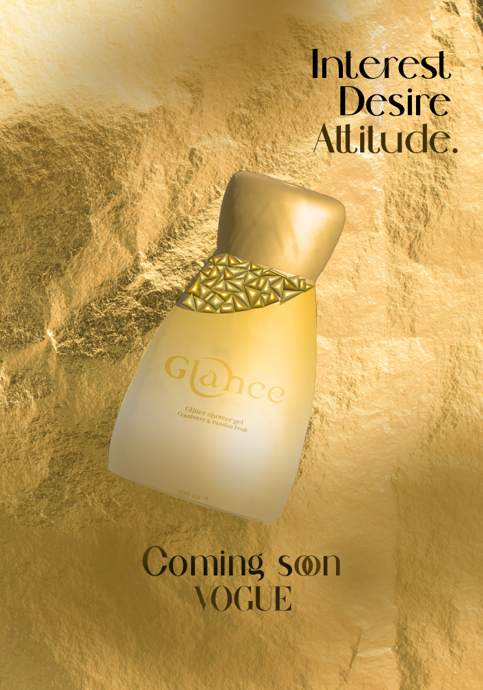
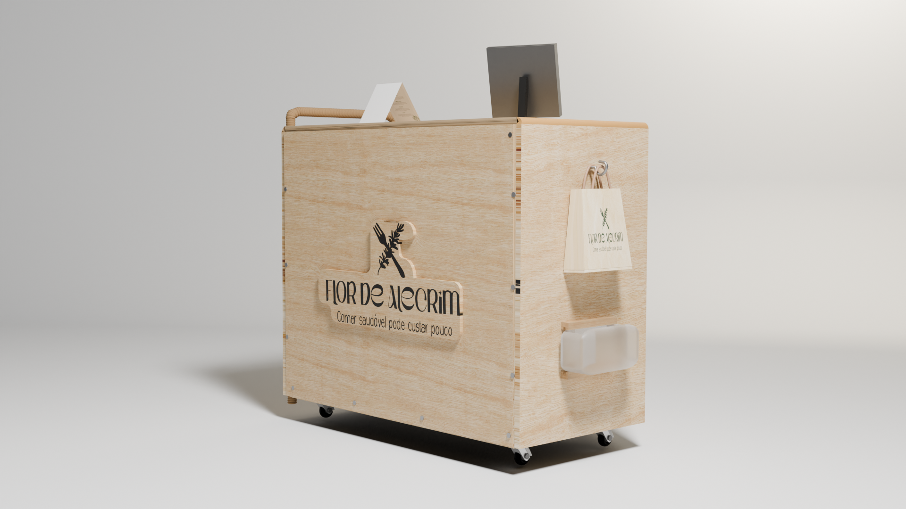

Product design and brand identity project developed for VOGUE Portugal with the aim of launching new packaging for its gift products.
PROJECTS
View latest posts, inspiration, and brand growth


Flor de Alecrim is a brand identity project created to revitalize and enhance the image of a small, local health food business. The goal is to help the brand stand out in a competitive market by modernizing its visual identity and improving its overall visibility. The project focuses on creating a fresh, natural aesthetic that reflects the company’s commitment to wholesome, organic products. By aligning the brand with its core values, the new identity is designed to attract a broader customer base and strengthen local market presence.

I design vibrant, engaging posters for a workshop at Lisbon Design Week, blending bold colors, dynamic typography, and modern visuals to attract creatives, highlight key details, and inspire participation in the event..